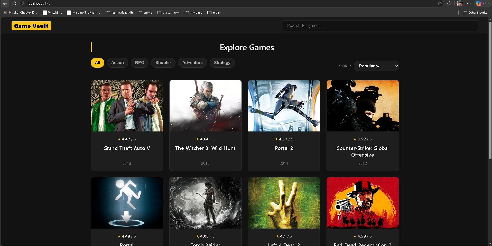

Game data & artwork via RAWG (opens in a new tab)
Game Vault.
Less searching.
More discovering.
A React game browser powered by the RAWG API. Search for games, explore genres, and browse a visual catalog with artwork, ratings, and release years—all in one place.
- React
- RAWG API
How it works — Game Vault
What it does
Game Vault makes a large game catalog easier to explore. Visitors can search by name, narrow the catalog with genre filters such as Action, RPG, and Adventure, and use the sorting control to change how games are displayed. Each card brings together a game’s cover image, title, rating, and release year.
How it’s built
React handles the interface and presents the game information as cards. The RAWG API supplies the game data through requests authenticated with an API key. The app brings that external information into a consistent browsing interface instead of maintaining its own game database.
The idea behind it
Make discovering a game feel straightforward: a clear search field, easy-to-find filters, and enough information on each card to decide what deserves a closer look.